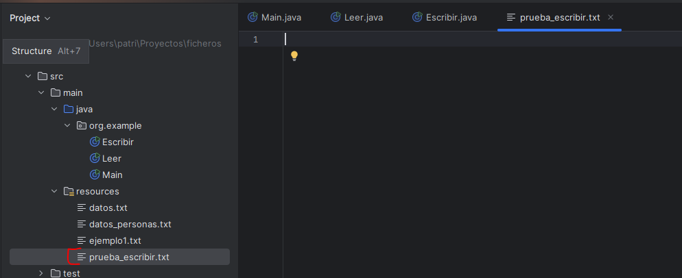
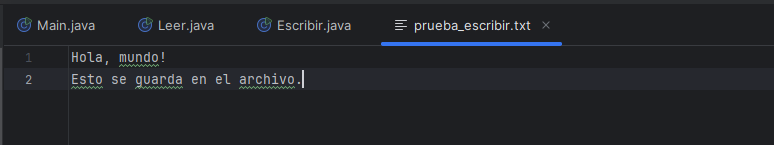

FileWriter se utiliza para escribir caracteres desde un archivo de texto. Se encarga de convertir los bytes del archivo a caracteres utilizando la codificación de caracteres predeterminada del sistema.
BufferedWriter se utiliza para escribir texto de manera eficiente. Al igual que BufferedReader, BufferedWriter utiliza un búfer para almacenar datos de salida.
Para probar, crearemos un fichero nuevo llamado "prueba_escribir.txt":

import java.io.BufferedWriter;
import java.io.FileWriter;
import java.io.IOException;
public class Escribir {
public static void main(String[] args) {
try {
BufferedWriter escritor = new BufferedWriter(new FileWriter("src/main/resources/prueba_escribir.txt"));
escritor.write("Hola, mundo!");
escritor.newLine();
escritor.write("Esto se guarda en el archivo.");
escritor.close();
} catch (IOException e) {
System.out.println("Ha habido algún problema.");
e.printStackTrace();
}
}
}
Cuando escribimos en BufferedWriter los datos se escriben primero en el búfer y se vacían (escriben) cuando el búfer está lleno, o cuando se usa el método flush(), que fuerza la escritura inmediata del contenido del buffer al archivo, sin necesidad de cerrar el flujo:
try {
BufferedWriter writer = new BufferedWriter(new FileWriter("src/main/resources/prueba_escribir.txt"));
writer.write("Primera línea escrita.");
writer.newLine();
// fuerza la escritura inmediata del contenido al archivo
writer.flush();
System.out.println("Primera línea escrita y guardada (flush).");
// seguimos escribiendo
writer.write("Segunda línea escrita.");
writer.newLine();
// finalmente cerramos (esto también hace flush implícitamente)
writer.close();
System.out.println("Segunda línea escrita y archivo cerrado.");
} catch (IOException e) {
System.out.println("Ha habido algún problema.");
e.printStackTrace();
}ACTIVIDAD 8. Modifica el método creado en la ACTIVIDAD 2 para que dentro de cada archivo generado se escriba la frase “Este es el fichero nombre(n).txt”.
ACTIVIDAD 9. Crea un método que reciba un archivo de texto y modifique su contenido, de modo que cada palabra del archivo deberá empezar en mayúscula.
(!) PISTA Ve leyendo el archivo original y escribiendo las modificaciones sobre un archivo temporal:
BufferedReader reader = new BufferedReader(new FileReader(archivo));
BufferedWriter writer = new BufferedWriter(new FileWriter(archivoTemp))Cuando termines, reemplaza el archivo original por el modificado:
// reemplazar el archivo original por el modificado
if (archivo.delete()) {
archivoTemp.renameTo(archivo);
System.out.println("Archivo modificado correctamente.");
} else {
System.out.println("No se ha podido reemplazar el archivo original.");
}La clase PrintWriter es una subclase de la clase abstracta Writer y se utiliza para escribir datos formateados en un flujo de salida. A diferencia de FileWriter, tiene la capacidad de imprimir representaciones de varios tipos de datos, incluyendo texto y primitivas como int, long, float, etc. Además, proporciona métodos para imprimir líneas completas (println()), que pueden ser muy útiles. Por ello, PrintWriter es mucho más versátil que FileWriter, y más conveniente cuando quieres imprimir cosas como si usaras System.out.
import java.io.*;
public class EjemploPrintWriter {
public static void main(String[] args) {
try {
PrintWriter writer = new PrintWriter(new FileWriter("salida.txt"));
writer.println("Primera línea con println()");
writer.flush(); // fuerza la escritura inmediata
System.out.println("Primera línea escrita y guardada (flush).");
writer.printf("Número: %.2f\n", 3.1416);
writer.println("Otra línea más.");
writer.close(); // flush() también ocurre automáticamente aquí
System.out.println("Archivo cerrado.");
} catch (IOException e) {
System.out.println("Ha habido algún problema.");
e.printStackTrace();
}
}
}
ACTIVIDAD 10. Crea un método que reciba 2 archivos de texto y combine el contenido de los 2 archivos. Para ello, se creará un nuevo archivo donde se debe añadir una palabra de cada archivo de forma consecutiva mientras queden palabras en cada uno de los archivos. Si algún archivo se queda sin palabras, se deben seguir añadiendo todas las todas las palabras que queden en el otro archivo.